МОИ ПУТЕШЕСТВИЯ
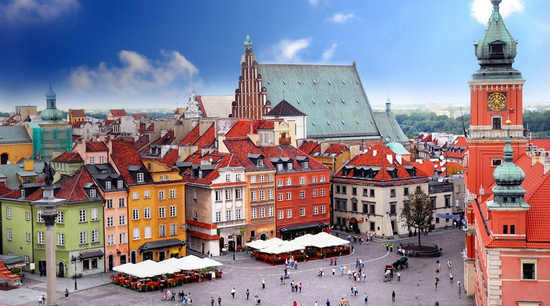
Путешествие в Варшаву было нашим самым спонтанным путешествием из всех наших спонтанных путешествий. Господи, спасибо тебе за мультишенген в наших паспортах, подаривший нам крылья и распахнувший нам дверь в Европу!
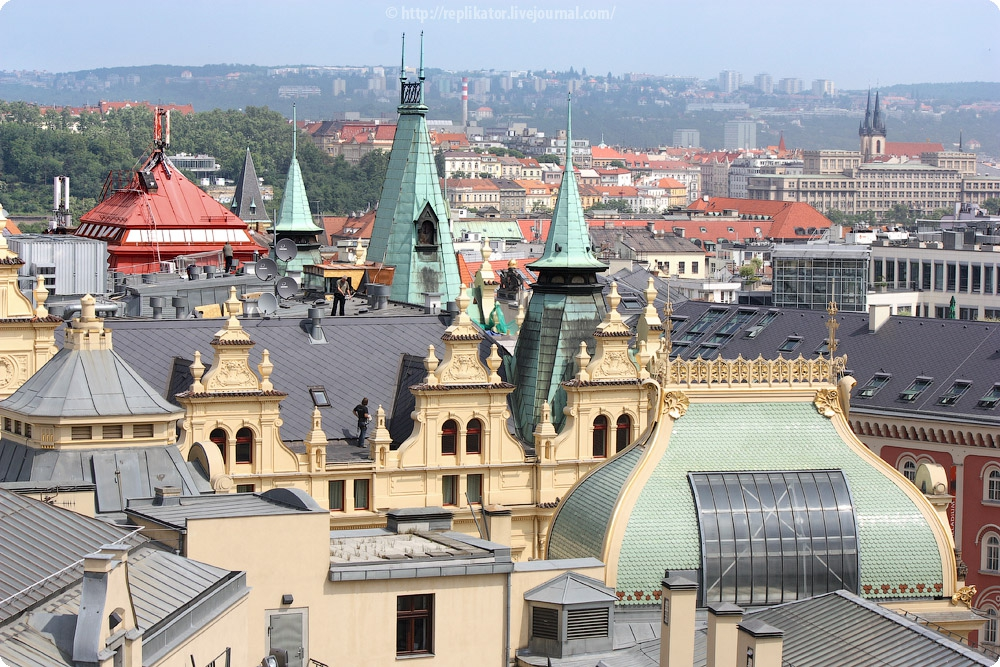
Прага самостоятельно: советы и секреты
Столица Чехии – это один из самых красивых городов Европы, и неудивительно, что многие туристы стремятся посетить его.
Тоже планируете побывать в Прагe? Отличный выбор! В этом городе Вас ждёт восхитительная архитектура, множество уникальных достопримечательностей и интересных мест, приветливые люди,
волнующее разнообразие развлечений, знаменитое чешское пиво и по-настоящему вкусная еда. Планируете поехать в Прагу самостоятельно?
Тогда читайте эту статью с полезной информацией. Делимся советами, которые пригодятся в самостоятельном путешествии в Прагу.
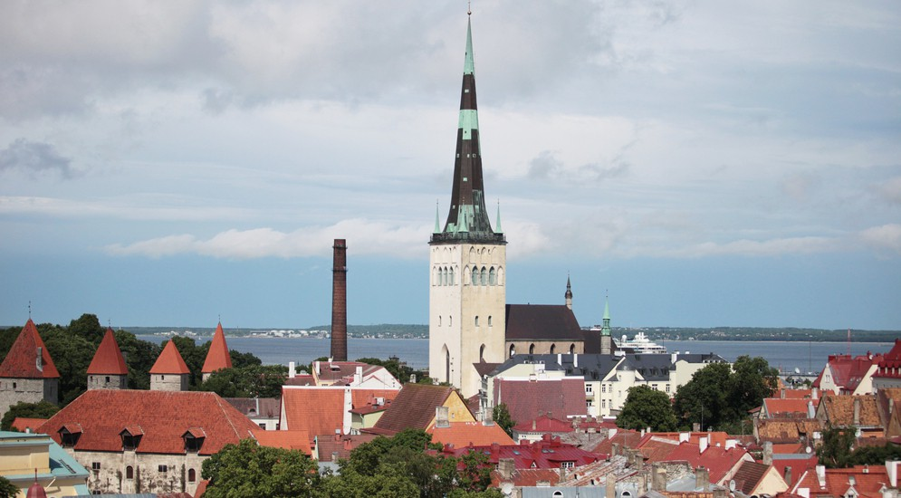
Таллин – одна из самых маленьких европейских столиц, и несмотря на это, посмотреть все достопримечательности Таллина за 1 день просто невозможно, их здесь множество, как исторических, так и современных, как платных, так и бесплатных.
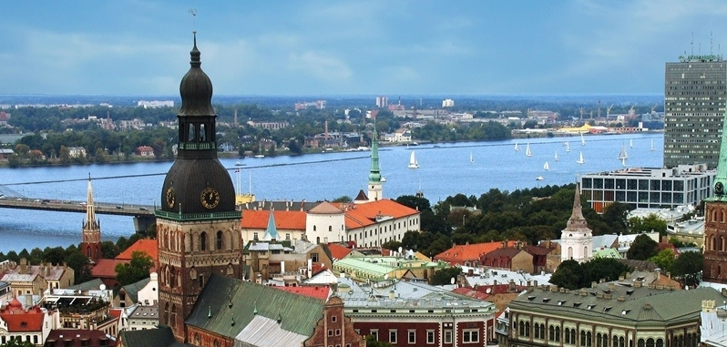
Добро пожаловать в Ригу – прибалтийский центр северного модерна
толица Латвии – Рига – несмотря ни на что, по сей день остается одним из самых красивых городов всей Европы. И хотя в ней год от года растут цены, уменьшается население и снижается темп жизни, памятники архитектуры и красивые панорамы продолжают радовать глаз и притягивают всех желающих отправиться в путешествие в Ригу. Если у вас имеется достаточно средств и вы хотите увидеть старинный, безлюдный город на реке – милости просим в латвийскую столицу. Здесь же мы дадим вам несколько советов к посещению этого города.
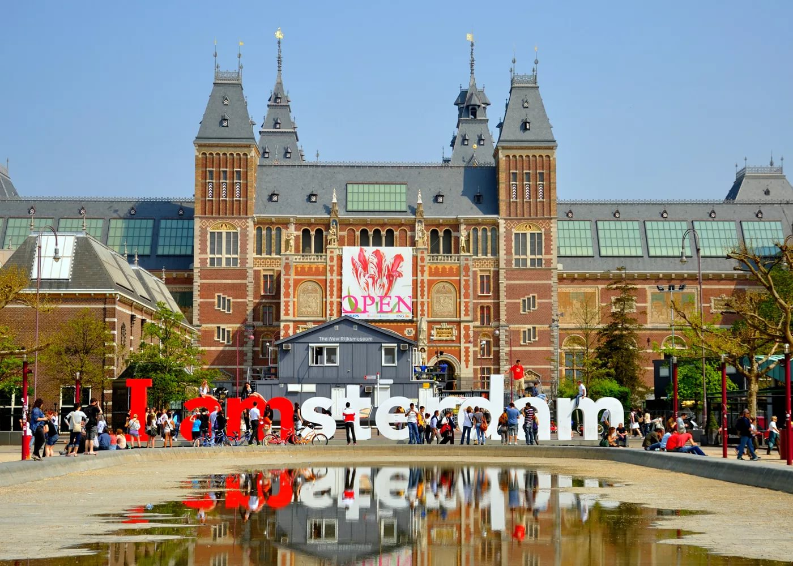
Амстердам - столица Нидерландов
Семисотлетняя столица Нидерландов, город девяти островов и тысячи мостов, уникально сочетает вещи, немыслимые в других местах.
Здесь разрешают запретное: старейшая церковь соседствует с кварталом «красных фонарей», в кофейнях легально курят гашиш и коноплю, а знаменитые тюльпаны мирно цветут в парке свободы нравов. С утра до вечера пышет изобилием Цветочный рынок, ярая сила подсолнухов вечно буйствует в музее Ван-Гога, а исконный голландский сыр неисчислимых сортов только и ждёт, чтобы его продегустировали.
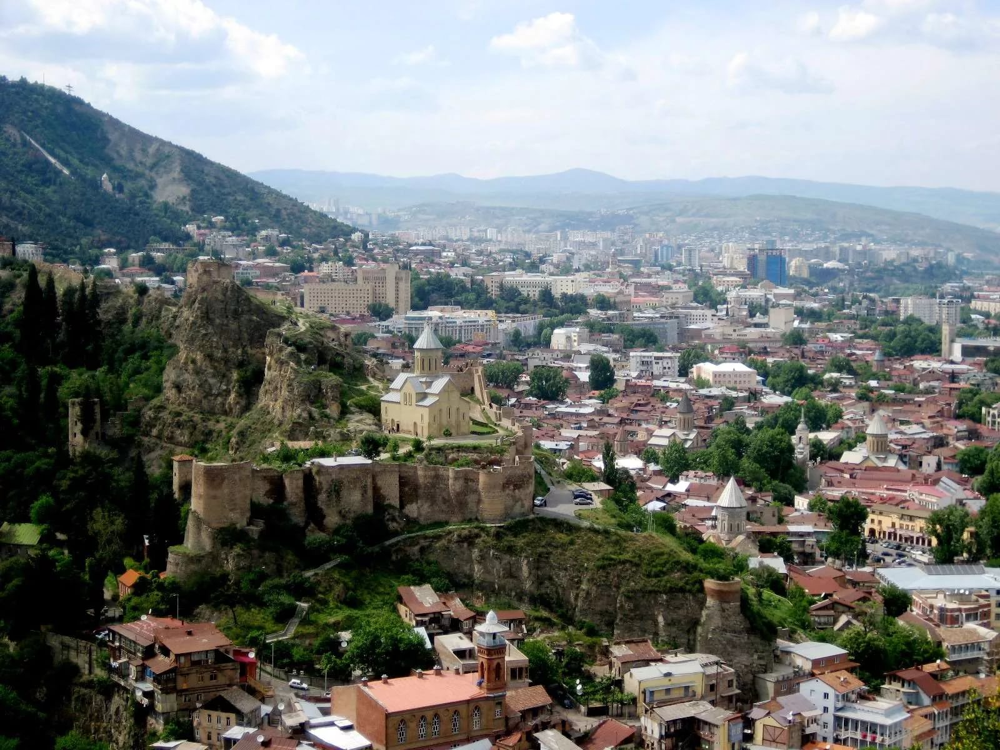
Тбилиси сегодня: впечатления о городе
Тбилиси сегодня - это сочетание старины и современности. Старый Тбилиси поражает архитектурой домов и вообще самой организацией этого общежития - мини-мирков - в большом городе. Такое можно увидеть еще, разве что, на Крещатике. То стремящиеся к небу, то бегущие вниз мощеные улочки. Хинкали, хачапури и вино - это отдельная грузинская вера. Здесь дешев транспорт , свежая и недорогая еда. Грузины очень общительны, мужчины порой навязчивы. Здесь никогда не отказывают в помощи. Реки и церкви, виноградники и городские миниатюры, балконы и хурма на оголившихся зимних ветках, Пиросмани и миллионы цветов. А еще газировка со вкусом крема - только из-за нее я готова возвращаться сюда снова и снова!
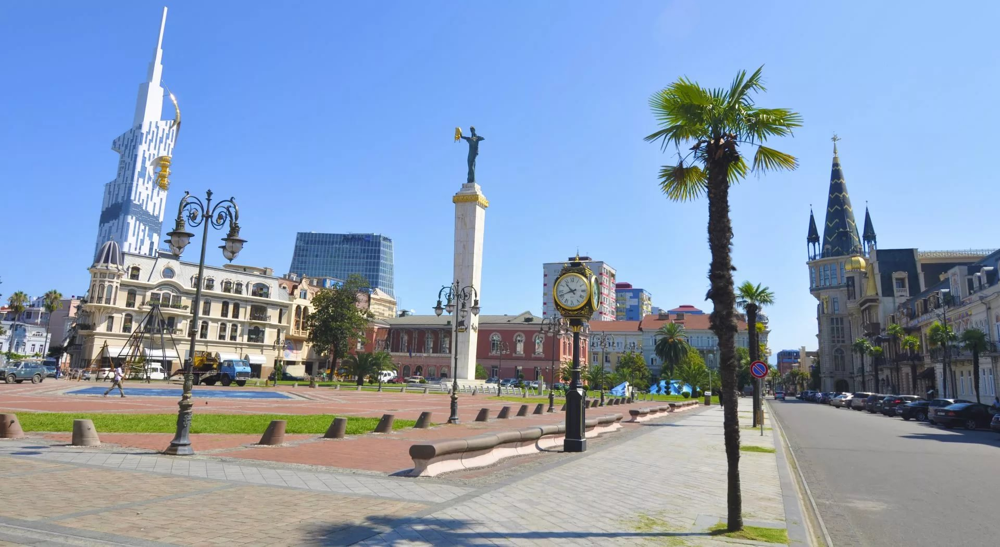
Туристический Батуми
Батуми – красивейший курортный город на берегу черноморского побережья Грузии рядом с турецкой границей. Еще совсем недавно он мало чем отличался от стандартного советского курорта, но всего за десятилетие город превратился в цветущий сад с огромным количеством зелени, оброс шикарными гостиницами мировых сетей и был практически полностью реконструирован. Сегодня рожденный заново Батуми, наверное, лучший курорт на Черном море. Город, превосходящий ожидания. Город, в который хочется вернуться.
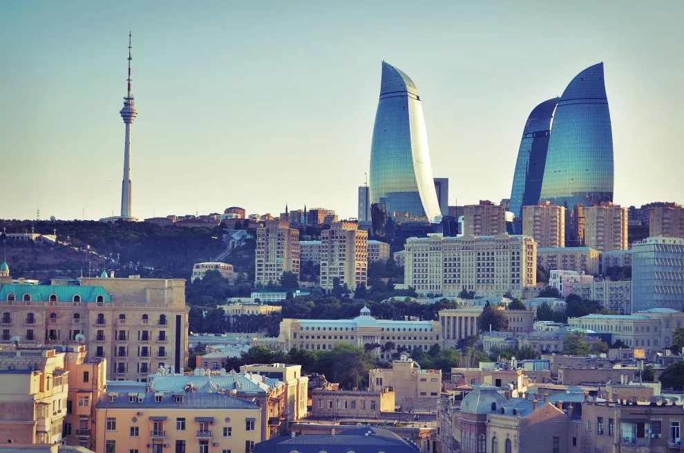
Восточная сказка с азербайджанским акцентом - Баку
В прошлом веке его называли восточным Парижем, сегодня при виде бакинских небоскребов на ум все чаще приходит Дубай — к тому же источником богатства и у первого, и у второго была и остается нефть. Баку, однако, ухитряется в ускоренном режиме приобретать модерновый облик, не теряя при этом шарма древнего города, бережно хранящего наследие старины. Здесь современная архитектура гармонично сочетается со средневековыми постройками. При этом Баку — по-прежнему восточный город, с присущим загадочному Востоку колоритом. Тут можно ранним утром выйти на шумный базар и прикупить ковер, сотканный вручную, а уже вечером отправиться любоваться на футуристические небоскребы «Башни пламени». Или, отведав в располагающей к задушевному разговору обстановке традиционных азербайджанских блюд, завершить день, пропустив стаканчик-другой в ультрамодном баре Bentley’s, что в гостинице Four Seasons.
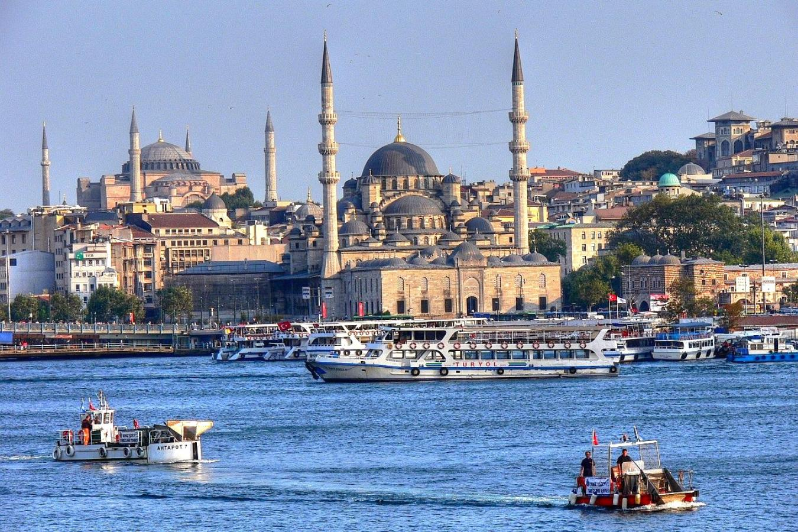
Путешествие в Стамбул
Стамбул – крупнейший город Турции, величественно раскинувшийся на берегах пролива Босфор. Этот мегаполис – единственный в стране, да и во всем мире, расположенный одновременно в Европе и Азии. Именно через Стамбул с населением в 14 657 434 человека проходит географическая граница между двумя континентами, и именно здесь встречаются воды двух морей, Черного и Мраморного. Европейскую часть города, со множеством торговых и офисных центров, и азиатские кварталы, где превалируют спальные районы, соединяет несколько мостов, движение по которым никогда не прекращается.
Роскошный, потрясающий, очаровательный, с неповторимым шармом и притягательностью – это далеко не полный перечень эпитетов, которые заслуживает Стамбул, успевший побывать столицей четырех империй: Римской, Византийской, Латинской и Османской. Несмотря на тот факт, что современной столицей Турции является город Анкара, Стамбул сохраняет свое особенное значение, но в несколько ином качестве, как многовековой центр мирового православия и место, где располагается резиденция архиепископа Константинополя – Нового Рима и Вселенского Патриарха.
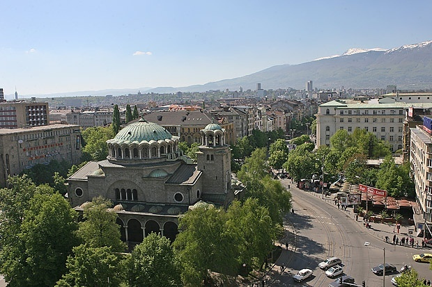
Несостоявшаяся столица мира
Столица Болгарии - один из самых старых городов Европы: ей почти три тысячи лет. Но по виду ни за что не дашь: сегодня она больше всего напоминает типовой российский «миллионник» с небольшим историческим центром. Разительное отличие от нее же самой 2000-летней давности. Тогда она - еще со старым называнием Сердика - могла стать главным городом мира. Император Константин, сделавший христианство официальной религией Римской империи, называл ее «своим Римом» и даже хотел перенести сюда столицу.
Центр Софии - это скопление площадей, улиц, памятников и церквей, посвященных России. Здесь есть улица Московская, площадь и собор Александра Невского, бульвар и памятник Александра II и бульвар Александра Дондукова, русского генерала едва не ставшего новым болгарским царем. Все они появились тут после освобождения Россией Болгарии от 500-летнего турецкого ига.

Путешествие в Афины
Афины – это сосредоточение всей истории древней Греции в одном месте. Саму страну мы уже изучили несколько лет назад, поэтому сейчас решили отправится только в Афины и погрузиться в историю Древней Греции. Сегодня Афины представляют собой курортный городок – столицу государства и исторический центр Греции. Только здесь можно увидеть руины храмов из мифологических легенд и мифов, лабиринты и памятники древней архитектуры.
Для любителей истории и всех фантастических историй Афины будут идеальным местом для проведения вашего отпуска на морском побережье. Да и все путешественники, планирующие поездку в один из городов Греции обязательно должны посетить ее столицу, чтобы ощутить на себе всю удивительную атмосферу этого необыкновенного мира древностей.

По Албании сверху донизу
Албанию хочется покинуть навсегда сразу после пересечения границы. В принципе такое желание возникает при посещении многих стран. Уникальность Албании в том, что это желание не исчезает со временем.
Забудьте все, что вы знали о Европе, если едете в Албанию, – эта страна к Европе относится лишь географически.
После крушения социалистических режимов Восточной Европы и ликвидации Албанской социалистической республики новые власти выбрали либеральный курс. Советская система разрешений, сертификаций и контролирующих органов была по сути демонтирована, и населению была предоставлена долгожданная экономическая свобода. Результаты этого можно наблюдать сейчас в Албании невооруженным глазом.
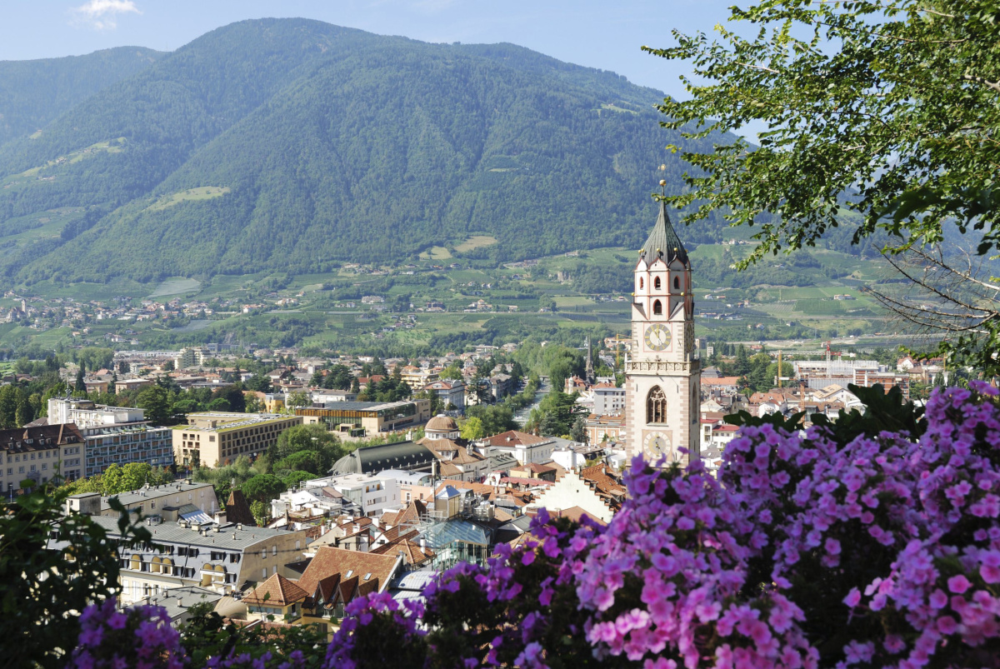
Красоты римских переулков и венецианских мостов
Мне захотелось собрать в кучу всю ту полезную информацию, которую я накопала, готовясь в наше самостоятельное путешествие в Италию.
Наверное, каждый любитель путешествий задумывался о поездке в Италию. Любой человек найдет там что-то для себя: прекрасные дворцы и маленькие узкие улочки, простую, но вместе с тем изысканную кухню, вина – сухие, подчеркивающие вкус блюд, или игристые, веселящие душу. И все это манит, потому что Италия покоряет каждого, кто умеет чувствовать и знает толк в радостях жизни – Dolce Vita, как говорят итальянцы.
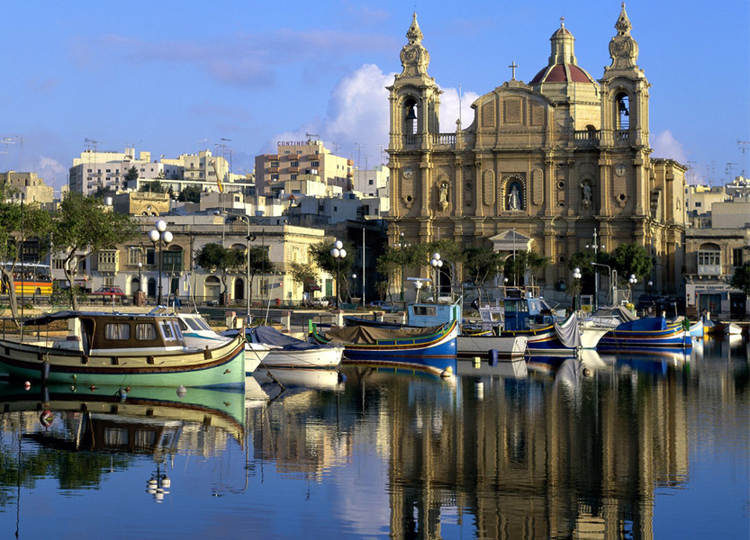
Мальта - бюджетно и красиво
Государство Мальта — это небольшая группа островов в Средиземном море. Не смотря на кажущуюся изолированность от остального мира, Мальта с древнейших времен является торговым и военным центром. Виной тому уникальное географическое расположение островов, которые находятся на перекрестке морских путей между Европой, Азией и Северной Африкой. Открыли архипелаг финикийцы, которые и дали стране ее современное название, «мальта» в переводе с финикийского означает «гавань» или «убежище».
За свою историю Мальта неоднократно переходила под протекторат могущественных держав мира. Здесь побывали греки, римляне, мавры, рыцари-крестоносцы, армия Наполеона, войска Британской империи. Сейчас Мальта является суверенным государством, основу экономики которого составляют доходы от туристического бизнеса.
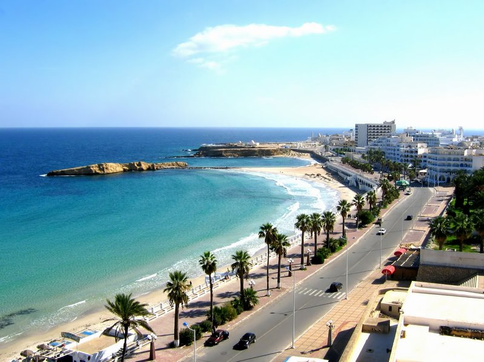
Дыхание Туниса
Еще не сошел средиземноморский загар, как уже жизнь большого города направила твои устремления в привычное русло. Но иногда, бывает время когда ты хочешь еще раз вспомнить, что с тобой происходило в эти 14 дней проведенные в Тунисе. Конечно, путешествие в эту страну было заранее спланировано, еще когда на земле лежал снег и мечты о теплом солнце казались только мечтами. Но по приближении весны взгляды все чаше натыкались на чемоданы и походные рюкзаки. И вот наступил долгожданное время, когда ты понял, что пробил час и пора уже собираться.
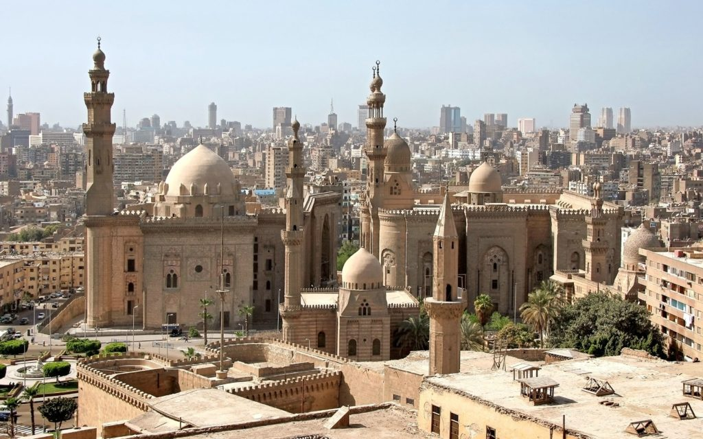
Отправляемся отдыхать в Египет
Необыкновенная страна, в которой правили фараоны, которую завоевывали римляне, турецкие хедивы и мусульманские калифы. Страна принадлежала Франции и Англии. Страна самой древней цивилизации планеты. История Египта, как отдельного государства небольшая, ей всего около 60-ти лет.
От древней цивилизации и до настоящего времени культуры государств оставили в Египте свои традиции, искусство и кулинарные причуды сложились под воздействием культур различных государств от древней цивилизации до настоящего времени. Ежегодно Египет привлекает внимание туристов со всех стран мира. В ней можно совместить приятный отдых на пляже и посетить места древнейшей цивилизации. Климатические условия страны позволяют посещать ее круглогодично.
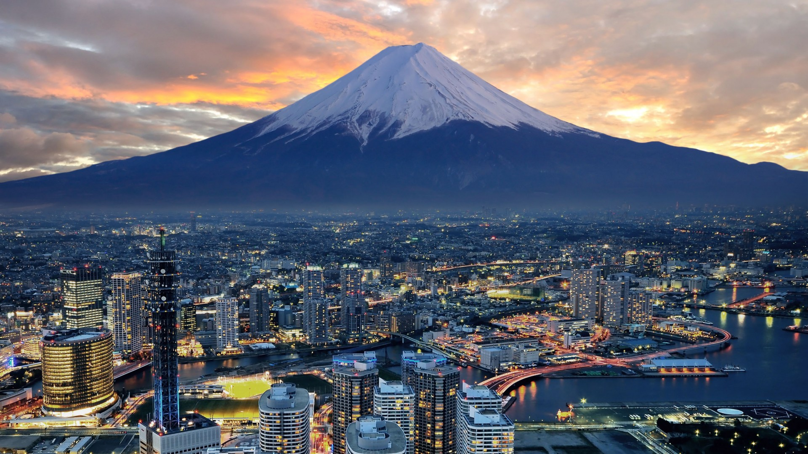
В Японию самостоятельно - путешествие в сказку
Дорого, далеко, непонятно - первое, что приходит в голову при мысли о поездке в Страну восходящего солнца. И это совершенно логично: Япония не самая дешевая страна, а ее столица и вовсе считается одной из самых дорогих в мире. Но HELLO! так просто не сдается. Мы попробовали разобраться, так ли все сложно и стоит ли отказываться от своих планов увидеть Фудзияму в разгар кризиса. Оказалось, что если очень захотеть, можно и в такое время в Японию улететь. Оказаться банкротом после этого путешествия не придется - наши советы в этом помогут.

Отдых в Южной Корее
Так повелось: маленькую Южную Корею у нас принято сравнивать с большой Японией, так же как здешние легковушки - с породистыми «японцами». Стоит ли удивляться, что результат аналогичный - у корейцев все оказывается как-то бледнее и мельче, чем у соседей, к тому же не таким совершенным. Зачем в таком случае сюда едут тысячи туристов из других стран, нам совершенно непонятно.
Но Страна утренней свежести, как называют корейцы свою родину, это не бюджетная копия Страны восходящего солнца. Она сама по себе. Здесь есть такое, аналогов чему не встретишь больше нигде. Например, тонированный 24-каратным золотом небоскреб или бои пьяных быков, преклонение перед квашеной капустой или 60-летние старухи-ныряльщицы за жемчугом на острове Чеджу, который, кстати, тоже сравнить не с чем - мандариновая житница всей Азии, местные ярко-оранжевые цитрусовые самые вкусные в этой части света.